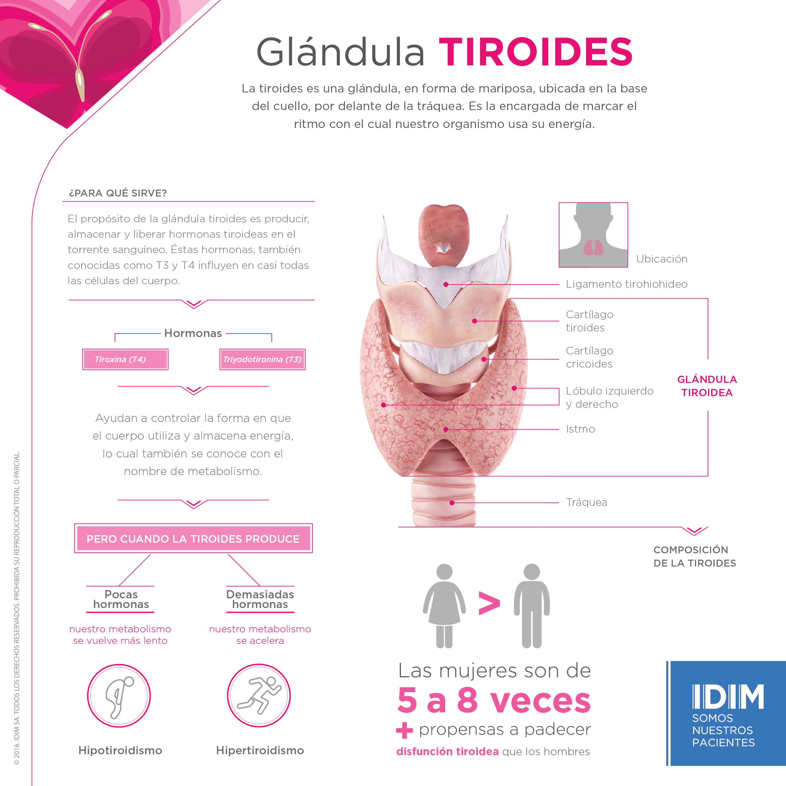

Inicio
Enfermedades
Ejercicios
Alimentacion
FAQ
Problemas de Tiroides
-La patología más común que afecta a la Tiroides es el Hipotiroidismo
-Una de las principales razones de los problemas de Tiroides es por el alto consumo de Sodio
